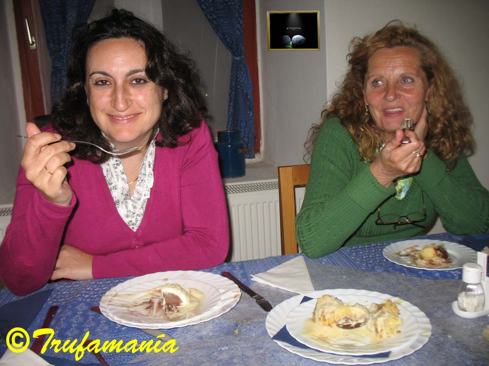
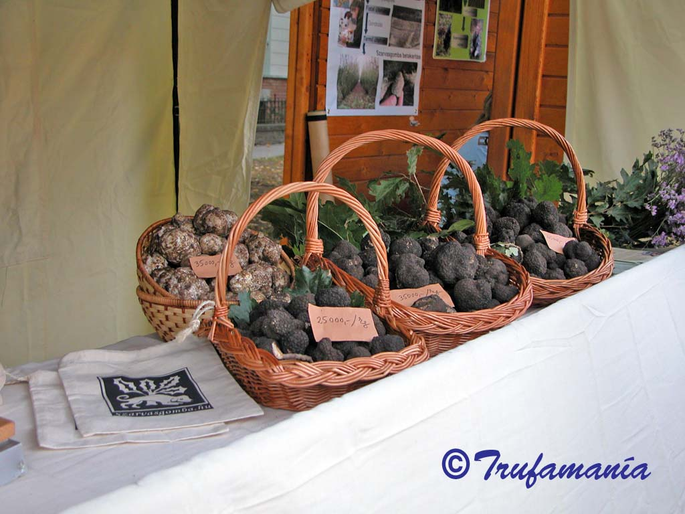

THE HUNGARIAN SWEET TRUFFLE (Mattirolomyces terfezioides)


Not a chocolate truffle — far from it. Mattirolomyces terfezioides (=Terfezia terfezioides) is a hypogeous fungus with an intensely sweet flavour, as sweet as saccharin. Hungary is the only country where it can be harvested in abundance, in Robinia pseudoacacia woodland from August to November. There it is known as “homoki szarvasgomba” and, owing to its unique and remarkably persistent sweetness, 
{kind=link}
In Spain it has been found only occasionally, in gardens and under fruit trees — including one specimen of over 20 cm discovered beneath an orange tree (F. Martínez & F. García. Butll. Soc. Micol Valenciana, 6. 2001: 249–250).
Mattirolomyces terfezioides grows mainly in the sandy soils of the Danube basin, in slightly alkaline to neutral substrates rich in humus, which is why it is also known as the “sand truffle”. Although classified among the desert truffles, it actually grows in semi-humid climates.
We found several specimens cracking the soil surface in a mixed Robinia pseudoacacia woodland in the Kiskunság National Park, thanks to the permits arranged by Andrea Gogan of Szent István University. It was a day devoted to locating “szarvasgomba” (truffles) with the aim of inventorying the species present in the National Park. We had the invaluable help of Bagi István, Zsolt and their truffle dogs. Although M. terfezioides does eventually emerge at the surface as it ripens, using dogs to detect it by scent before it breaks through the soil yields far more specimens, and of better quality.


In Hungary it is harvested commercially; at the Hőgyészi fair we saw it selling for 35,000 forints per kilogram (approximately €130/kg), a price comparable to that of Tuber aestivum f. uncinatum.
Mattirolomyces terfezioides is globose and fairly regular in shape, ranging from 1 to 20 cm in size. The peridium is very thin and white at first, becoming ochre as it ripens. The gleba is ochre, marbled with white veins. The texture is softer and more watery than that of the terfezias, and it deteriorates considerably faster. The odour is faintly aromatic at first, becoming unpleasant in fully ripe specimens. The taste is very sweet and persistent.
{kind=link}



We tried it in several desserts and found it very pleasant, though it should be used sparingly, as its sweetness can easily become cloying.
 |
Antonio Rodríguez trufamania@gmail.com antonio@trufamania.com ORCID iD: 0000-0002-0708-7773 |